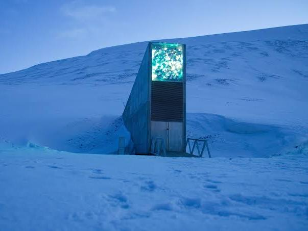
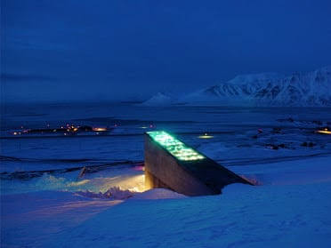
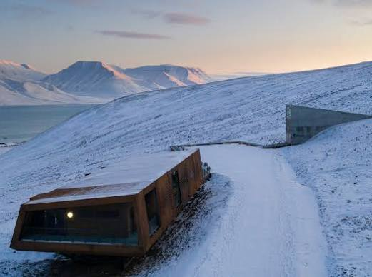
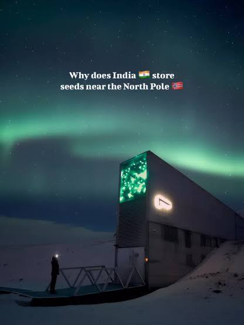
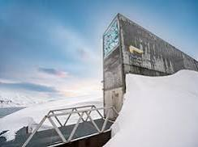
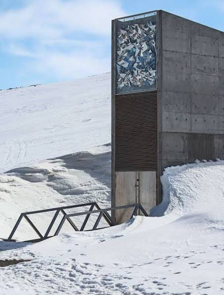
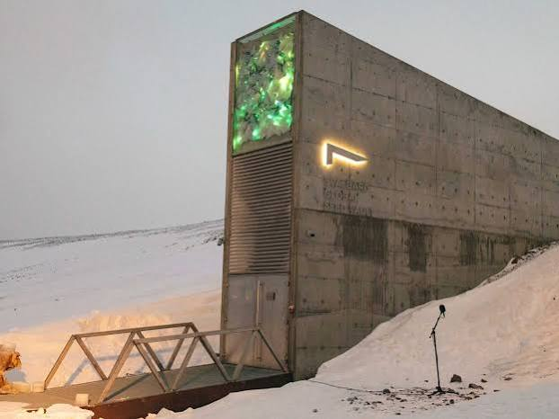
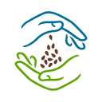

Conversation 07
cryptex svalbard seedbank concept
Prompt 1 · You
cryptex svalbard seedbank concept
Response 1 · Google AI Mode







A "Cryptex Svalbard Seedbank" concept usually refers to a speculative or artistic engineering design that merges the mechanics of a cryptex (a cylindrical vault with rotating letter rings used to hide secrets, popularized by The Da Vinci Code) with the extreme safeguarding mission of the Svalbard Global Seed Vault.
While the actual seed vault in Norway relies on a physical facility built 120 meters deep inside an Arctic mountain, the "cryptex concept" reimagines how highly critical information or the seeds themselves could be mechanically locked, organized, or preserved.  YouTube·Al Arabiya English +1
YouTube·Al Arabiya English +1
YouTube·Al Arabiya English +1Core Pillars of the Concept
- Mechanical Access Over Digital Control: In a true cryptex design, access relies on physical gears, alignment, and a password combination rather than electronic keycards or digital servers. Applying this to a Svalbard concept implies a "low-tech, high-security" backup that remains fully operational even if a global catastrophe destroys the electrical grid or internet.
- Decentralized Capsule Storage: Instead of open shelves holding cardboard boxes, a cryptex seed bank concept reimagines the seeds stored in individual, pressurized cylindrical capsules. Each capsule or sub-chamber acts as its own miniature vault, requiring a specific mechanical verification code to open.
 Facebook·Al Arabiya English +1
Facebook·Al Arabiya English +1 - Built-in Fail-Safes: A traditional cryptex contains a vial of vinegar that breaks and destroys the hidden papyrus if forced open. In a seed-vault concept, this mechanism is reversed into a fail-secure survival pod—if the outer structural integrity is compromised, the capsule seals permanently or triggers an autonomous deep-freeze mechanism using the surrounding Arctic permafrost. YouTube·Unbox Engineering +1
Real-World Parallel: The Actual Vault
Though a literal puzzle-box structure doesn't exist on Spitsbergen, the real Svalbard Global Seed Vault already shares the philosophical DNA of a cryptex:
Crop Trust +1
- Strict Ownership Lock: The actual vault operates like a bank deposit box box system. Only the depositing nation holds the "code" (ownership rights) to withdraw their seeds; no one else can access them.

SeedSavers +2 - Passive Preservation: Like a mechanical device that works without a battery, the real facility is carved into sandstone and relies on natural permafrost to keep seeds frozen at sub-zero temperatures even if the artificial cooling power completely cuts out. www.seedvault.no +1
Are you researching this concept for a creative writing project, sci-fi worldbuilding, or a specific industrial design/architecture project? I can help flesh out technical mechanics or narrative lore based on what you are creating.
Source links preserved from this response
- Svalbard Global Seed Vault
https://en.wikipedia.org/wiki/Svalbard_Global_Seed_Vault - YouTube · Al Arabiya English
https://www.youtube.com/watch?v=toKQYC1jS3M&t=115 - Facebook · Al Arabiya English
https://www.facebook.com/alarabiya.english/videos/inside-the-svalbard-global-seed-bank/607287489028011/ - YouTube · Unbox Engineering
https://www.youtube.com/shorts/mb91uBgSE3I - Crop Trust
https://www.croptrust.org/what-we-do/programs/svalbard-global-seed-vault/ - SeedSavers
https://seedsavers.org/myths-and-realities-of-the-svalbard-global-seed-vault/ - www.seedvault.no
https://www.seedvault.no/about/purpose-operations-and-organisation/